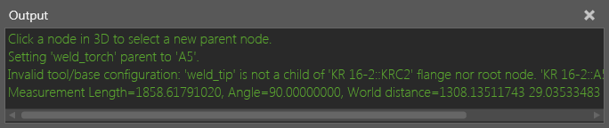

Output
The Output panel prints feedback on events, commands and other actions.

Tips:
The Output panel can be cleared automatically on simulation start. This option is found under File-Options-General.